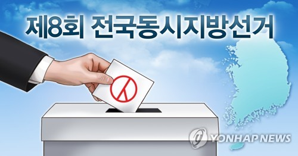

2022년 6월 1일 치러질 예정인 대한민국의 전국동시지방선거. 초일 산입을 적용하므로 2004년 6월 2일까지 출생한 이는 본 선거에 투표할 수 있고 선거에 출마도 할 수 있다. 또한 만 18세가 투표권을 행사할 수 있는 첫 지방선거이다.
이번 지선은 대선의 연장전 격이다. 이번 대선은 역대 대선 중 가장 최소 표차이로 겨우 승부가 갈린 대선이다. 따라서 1%도 안 되는 표차로 겨우 승리한 국민의힘 입장에서는 다음 총선과 더불어서 반드시 승리를 굳혀야 할 중요한 선거다. 반대로 야당이 된 더불어민주당 입장에서는 반드시 이번 지방선거에서 승리해서 여소야대 형국을 이어가야 하는 상황이다. 이때문에 뒤바뀐 여야 모두 이번 지방선거에 사활을 걸 것이라고 예상된다.